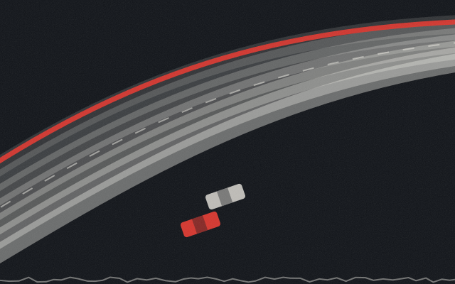
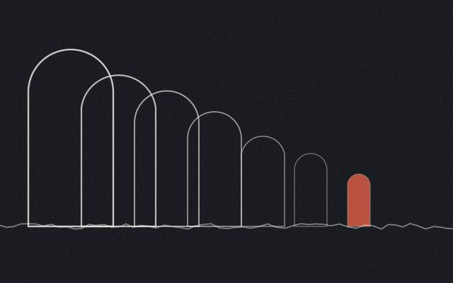
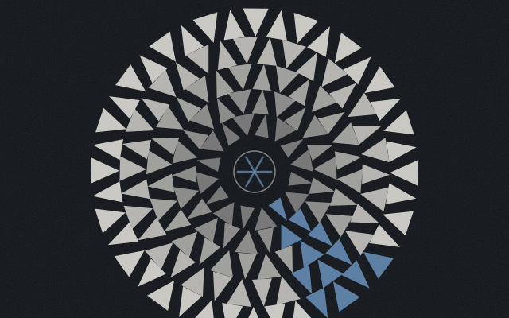
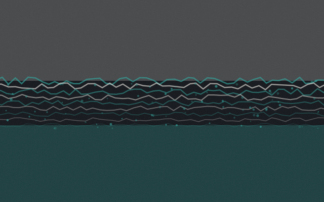
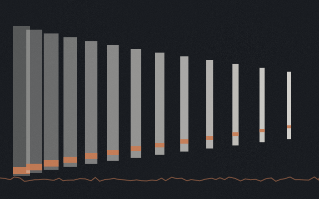
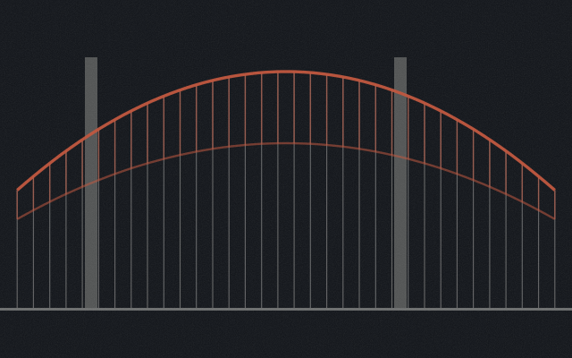
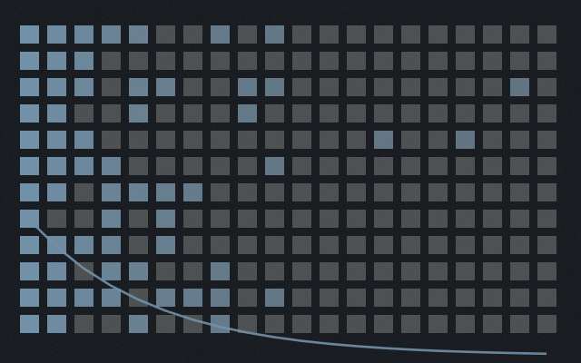
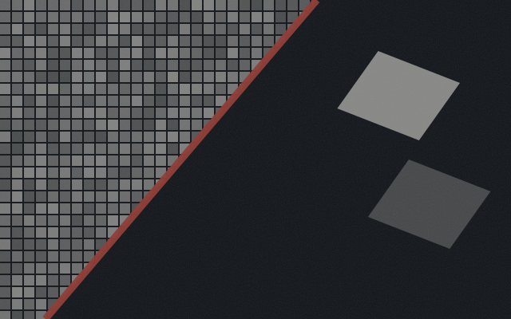

Qixi (Jason) HuangMachine learning & quantitative research
Eight projects. In most of them the interesting part is not the model — it is the moment it turned out to be wrong, or right for a reason I hadn't noticed, or beaten by something embarrassingly simple. Each one opens on the argument, not the accuracy.

Telemetry · replay · 4 models
The 2023 Spanish Grand Prix rebuilt as something that unfolds. Press play and the order, gaps and tyre ages advance the way they would on the pit wall, with four models trying to say something useful before the lap is over.
Lap-time model wins 44% of laps at the start of a lap — a tie. It only pulls ahead once two sectors are in. Open Race Control →
NLP · intent · refusal
Anyone can build the half that routes a question to an answer. The half that decides this one isn't mine is the half that determines whether the thing can go on a vehicle carrying people.
Ask it "my chest hurts" → refused at 0.988 confidence. The safety handler scored 0.008. Ask it something →
Credit risk · interpretability · fairness
Every credit-default project ends at an AUC. But a probability isn't a decision — somebody has to draw a line, and the moment that line exists it hands a bill to somebody. Set the cost ratio and watch who receives it.
I first read four real disparities. A permutation test put one at p = 0.29. Three survived; that one was noise. Draw the line yourself →
Quant · statistical arbitrage
Two funds track roughly the same thing, their prices wander apart, and if the gap is stationary it's a forecast. The textbook version works — which is exactly what makes the part where it doesn't worth publishing.
Gross Sharpe −0.3560, net −0.5188. It was already losing before a single basis point was charged. Re-price the backtest →
Quant · walk-forward
Does a cross-sectional forecast of next-month industry returns survive being traded honestly — the model never seeing a day that hadn't happened yet when the portfolio was decided? The answer was neither of the two I expected.
Signal is real: permutation p = 0.001, rank IC 0.0578 at t = 5.82. Break-even 35.8 bp against 5.9× turnover. Drag the cost →
Diagnosis · two reference frames
A driver says the car feels wrong and can't say what's wrong. Twenty minutes until the next run, and telemetry is the only evidence. A diagnosis only exists relative to a reference — so this builds two, and shows where they disagree.
The deficit isn't spread around the lap. Turn 8 alone accounts for 49% of it. Switch the reference →
Recommenders · evaluation
Thousands of MovieLens notebooks end the same way: four RMSEs within a couple of hundredths, a winner picked on the third decimal. I came back with a different question — when this thing is wrong, is it wrong about everyone?
Two models 2.1% apart on RMSE turn out to be 69× apart on precision@10. Compare the engines →
ML engineering · pipeline
Two satellite scenes diced into super-pixels. Before fitting anything I wanted a floor: how much does one threshold on one column already explain? All of it — the scenes were calibrated differently. So the engineering became the project.
An off-by-one meant it read 2,047 of 2,048 rows, and the "class balance" was an artifact of the config. Move the threshold →